云博移动客户端为睿亚训云博IT实践数字资源库平台PC客户端——学宝的移动补充版。具备学宝客户端的部分重要功能，方便师生随时随地查看云博平台的教学资源。
如下图所示，输入用户名、密码之后，点击“登陆”按钮即可登陆


如下图所示，成功登陆之后会首先看到一个指导界面，该界面用来说明如何调出菜单，通过点击左上角应用Logo图片或者从屏幕左边沿向右边滑动即可调出菜单

点击“知道了”按钮之后可以看到“首页”界面，该界面可以看到登陆的用户信息和最常浏览和历史记录信息

通过滑动屏幕调出菜单，点击“我的课程”按钮即可进入课程列表界面
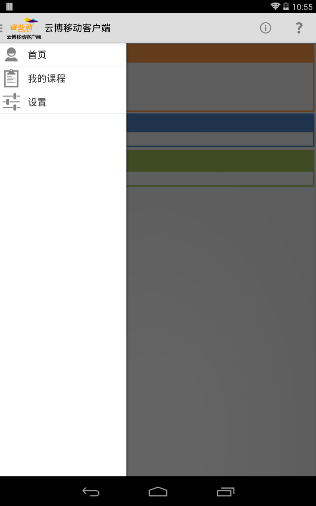
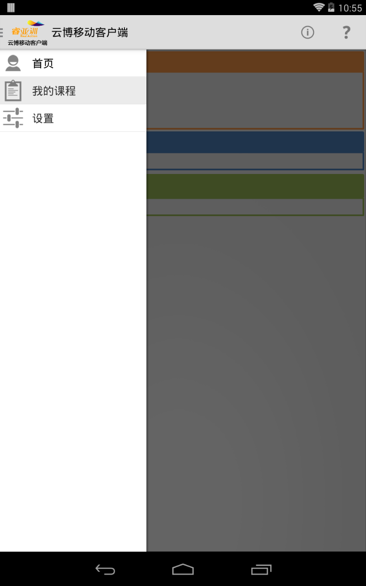
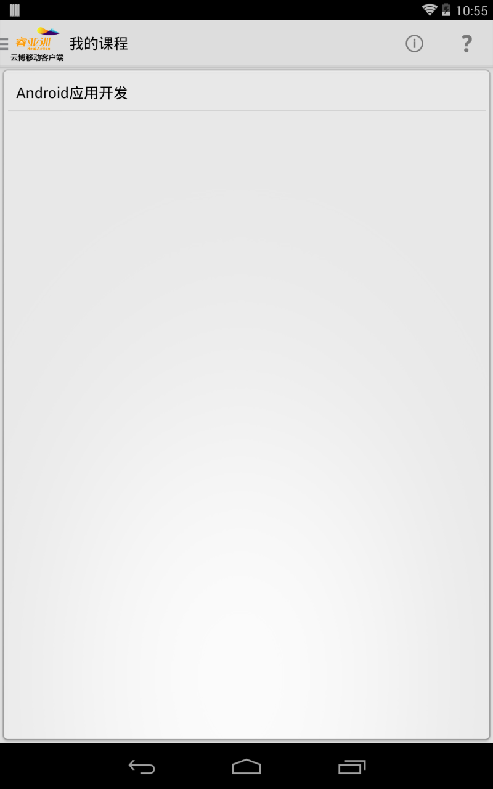
点击某一门课程，即可进入课程案例列表界面

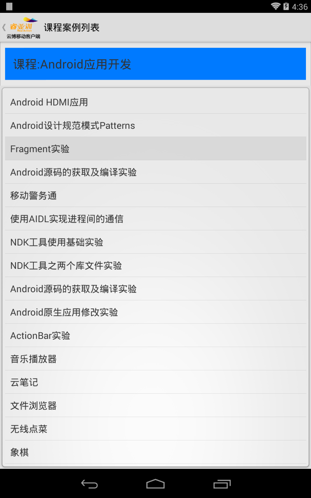
案例列表点击某一个案例之后会进入到案例资源详细信息界面

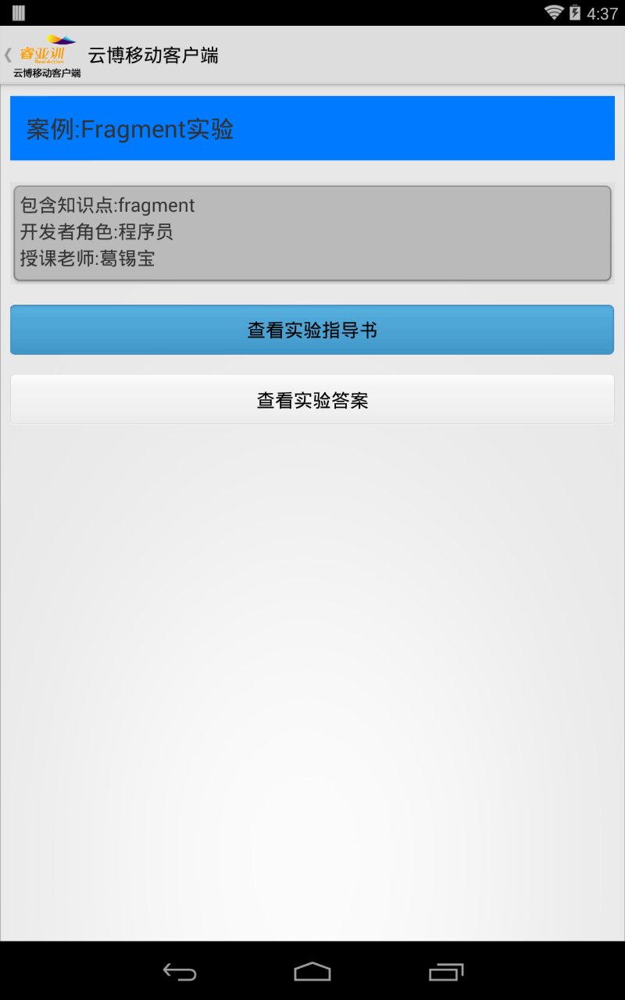
点击“查看指导书”或“查看答案”按钮即可进入指导书或答案查看界面


指导书或答案界面以列表的形式展示教学资源，如果是目录则点击之后会进入目录，如果是可查看的资源则点击之后会在新界面显示该资源，点击列表最上方蓝色背景的返回按钮可以返回上层目录
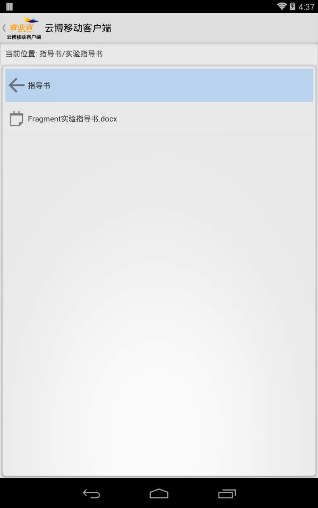
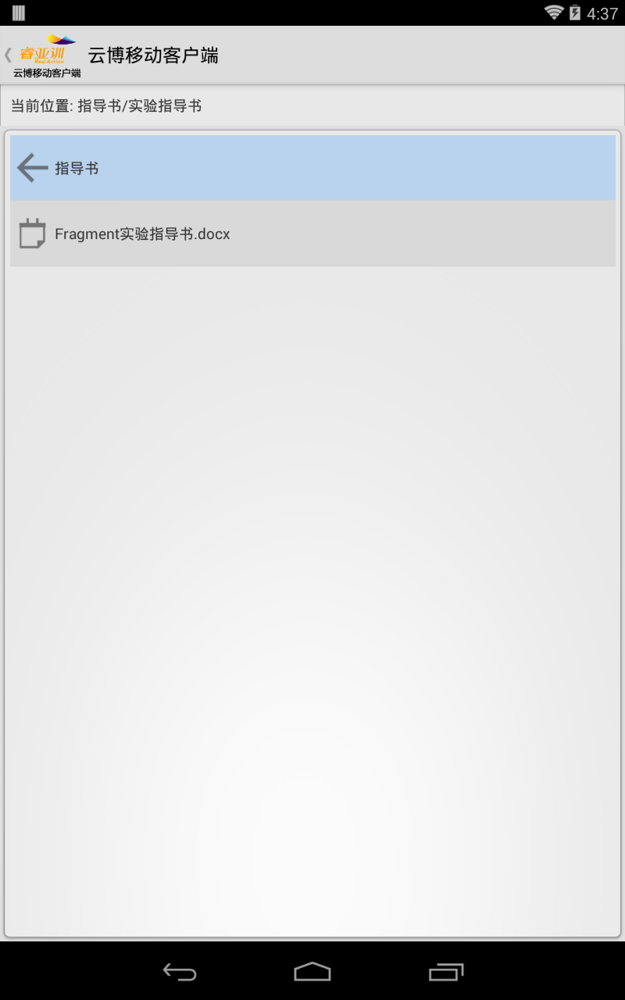
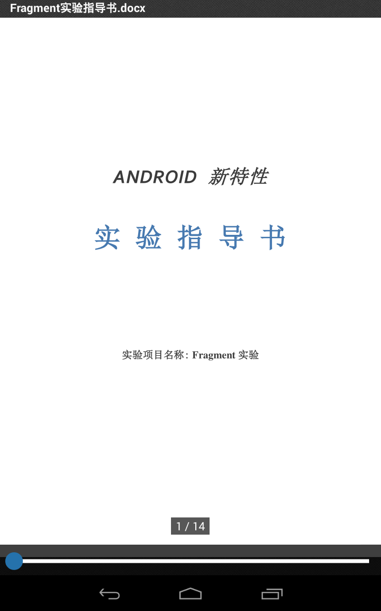
查看教学案例资源的时候可以拖动或缩放


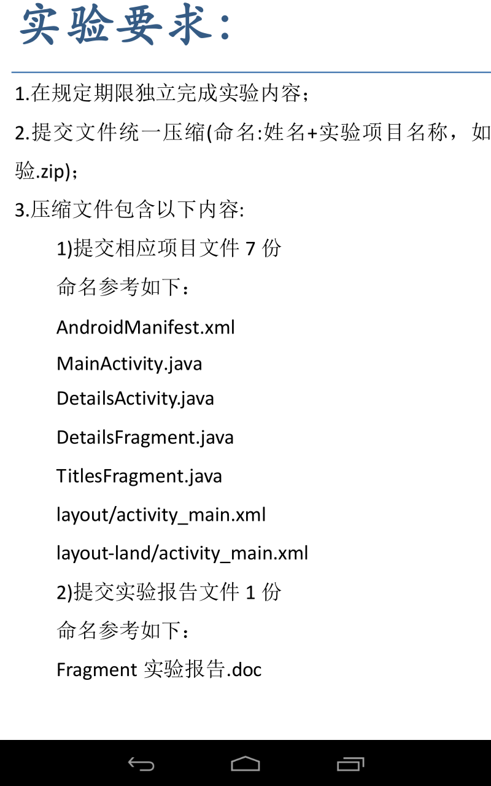
在各个界面点击左上角的Logo即可返回上一个界面，功能同Back键
切换至“设置”界面

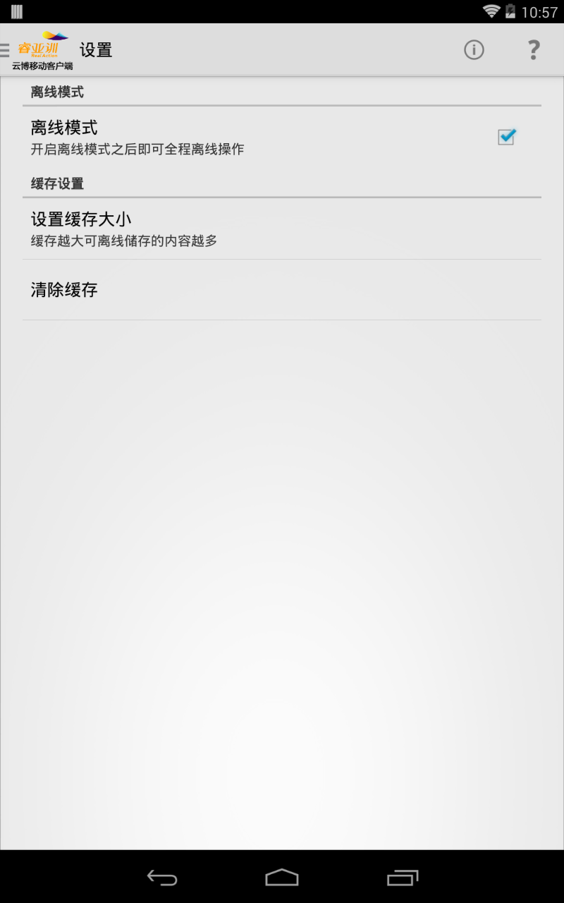
设置缓存大小，缓存越大可离线缓存的资源越多


清除缓存功能，可清楚已缓存的内容
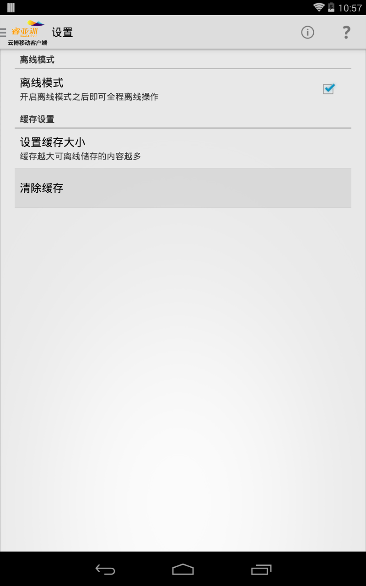
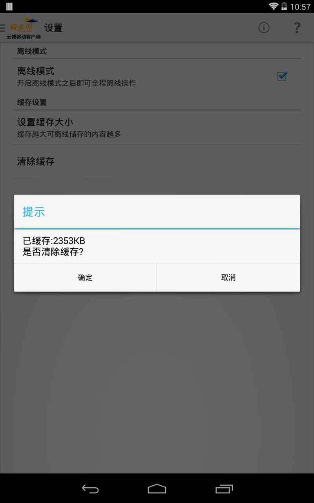
“关于”菜单按钮，点击确定按钮可以打开浏览器跳转到云博介绍页面


“帮助”菜单按钮，点击之后跳转到云博移动客户端使用帮助文档界面

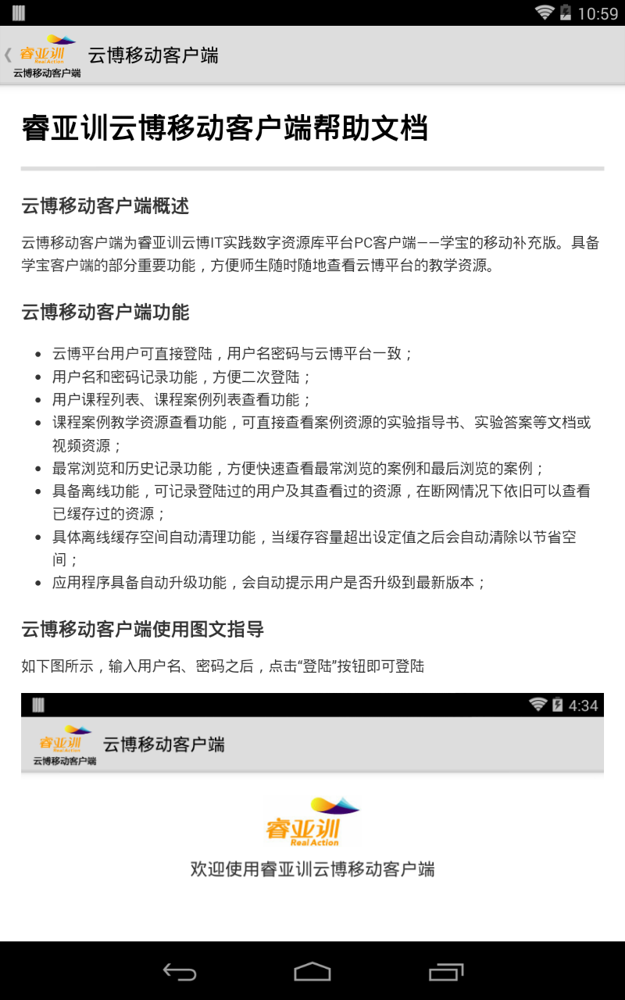
退出提示对话框
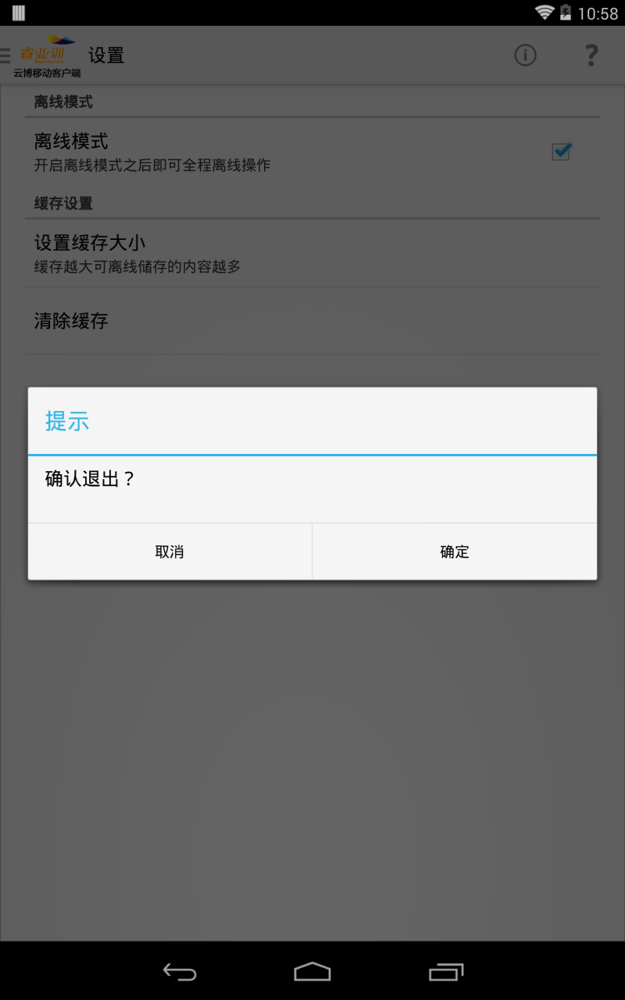